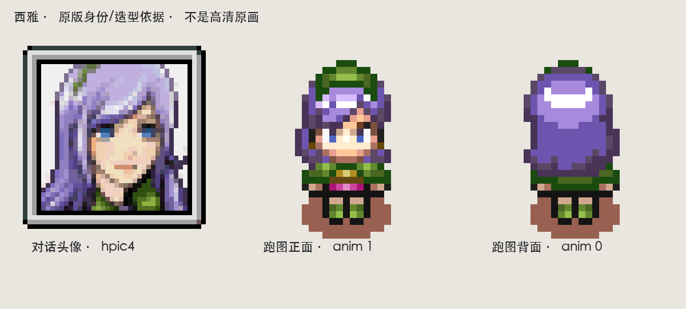

v4 已被退回：动作不可信，高清身份造型偏向盗贼。本页是参考研究，没有新的获认可角色图。
space.bar.anim · Essential Sword & Shield · 作者动作预览 · Adobe Mixamo · Clembod 2D Warrior
Fab 作者预览目前被 YouTube 登录校验挡住，仅核实了商品与动画清单，尚未逐帧检查该包。3D 动作用于研究骨盆、肩肘、腕与脚的连续关系；最终仍制作 Unity 2D 西雅。未购买、导入商用包或宣称已拿到 FBX。

保留紫发、绿色主色与粉色腰带；完整战斗身体与团服护具属于新设计。下一版方向：结构清楚的绿白团服、适量银色护肩/护臂/护胫、实用剑鞘与武装带。组织纹章仍待设计，不能称为原包已有。
完整研究与动作制作约束